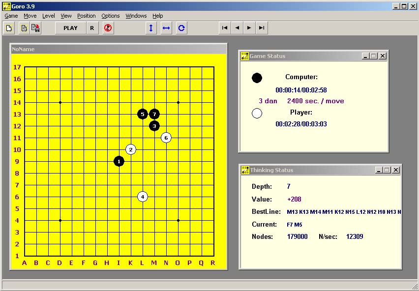

这个软件谁用过!!??
#1 这个软件谁用过!!?? 作者：xr__ 发表时间：2007-4-25 17:13:24
这个软件谁用过!!??#2 Re:这个软件谁用过!!?? 作者：xr__ 发表时间：2007-4-26 7:21:15
图片没上来啊!

#3 Re:这个软件谁用过!!?? 作者：gerbo 发表时间：2007-4-26 9:35:35
 不就是黑石么，换了个马甲就当我不认识拉～～
不就是黑石么，换了个马甲就当我不认识拉～～
#4 Re:这个软件谁用过!!?? 作者：逆刃 发表时间：2007-4-26 12:31:00
呵呵,应该不是吧,那个程序大赛里有个Goro2005，2006的，不知道是不是，但好象是无禁的，我没用过！#5 Re:这个软件谁用过!!?? 作者：yidefei 发表时间：2007-4-26 14:42:56
这界面和老黑很像呢#6 Re:这个软件谁用过!!?? 作者：有志青年 发表时间：2007-4-26 21:05:29
3.9,没见过哟#7 Re:这个软件谁用过!!?? 作者：极地剑客 发表时间：2007-4-30 23:56:54
GORO2005/06好象要靠引擎加载吧~这个图片外壳跟黑石一样呵~#8 Re:这个软件谁用过!!?? 作者：小姨姐姐的妈 发表时间：2007-5-1 0:00:46
那几步白棋是它算出来的?
#9 Re:这个软件谁用过!!?? 作者：基地色狼 发表时间：2007-5-1 1:39:48
好象就是老黑吧,
#10 Re:这个软件谁用过!!?? 作者：longfx 发表时间：2007-5-2 12:16:35
不是黑石,但是吧,是同一作者制作的无禁软件GORO#11 Re:这个软件谁用过!!?? 作者：灯塔连珠 发表时间：2009-2-23 0:09:38
谁能提供这个软件的下载呀？#12 Re:这个软件谁用过!!?? 作者：wrwak 发表时间：2009-2-23 12:22:06
goro2007 太SB了 不是正式版#13 Re:这个软件谁用过!!?? 作者：wrwak 发表时间：2009-2-23 12:30:55
LZ你的图是哪里来了